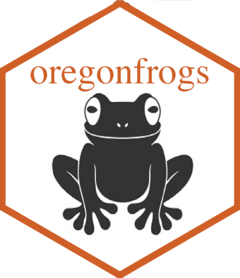
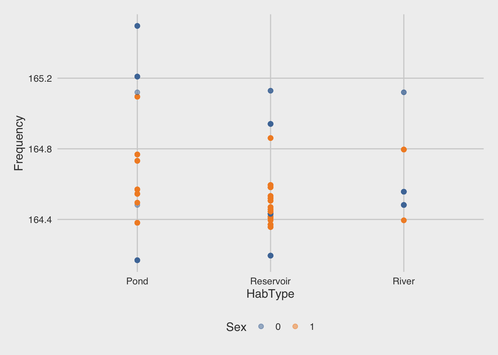

oregonfrogs 
The goal of oregonfrogs is to provide a great dataset for data exploration & visualization.
Installation
You can install the development version of oregonfrogs like so:
To install the development version from GitHub use:
# install.packages("remotes")
remotes::install_github("fgazzelloni/oregonfrogs")Example
This is a basic example which shows you how to solve a common problem:
What is special about using README.Rmd instead of just README.md? You can include R chunks like so:
head(oregonfrogs)
#> # A tibble: 6 × 16
#> Site Subsite HabType SurveyDate Ordinal Frequency UTME_83 UTMN_83 Interval
#> <chr> <chr> <chr> <chr> <dbl> <dbl> <dbl> <dbl> <dbl>
#> 1 Crane P… SE Pond Pond 9/25/2018 268 164. 597369 4846486 0
#> 2 Crane P… SE Pond Pond 10/2/2018 275 164. 597352 4846487 1
#> 3 Crane P… SE Pond Pond 10/9/2018 282 164. 597345 4846458 2
#> 4 Crane P… SE Pond Pond 10/15/2018 288 164. 597340 4846464 3
#> 5 Crane P… SE Pond Pond 10/22/2018 295 164. 597344 4846460 4
#> 6 Crane P… SE Pond Pond 11/1/2018 305 164. 597410 4846451 5
#> # … with 7 more variables: Female <dbl>, Water <chr>, Type <chr>,
#> # Structure <chr>, Substrate <chr>, Beaver <chr>, Detection <chr>For example:
